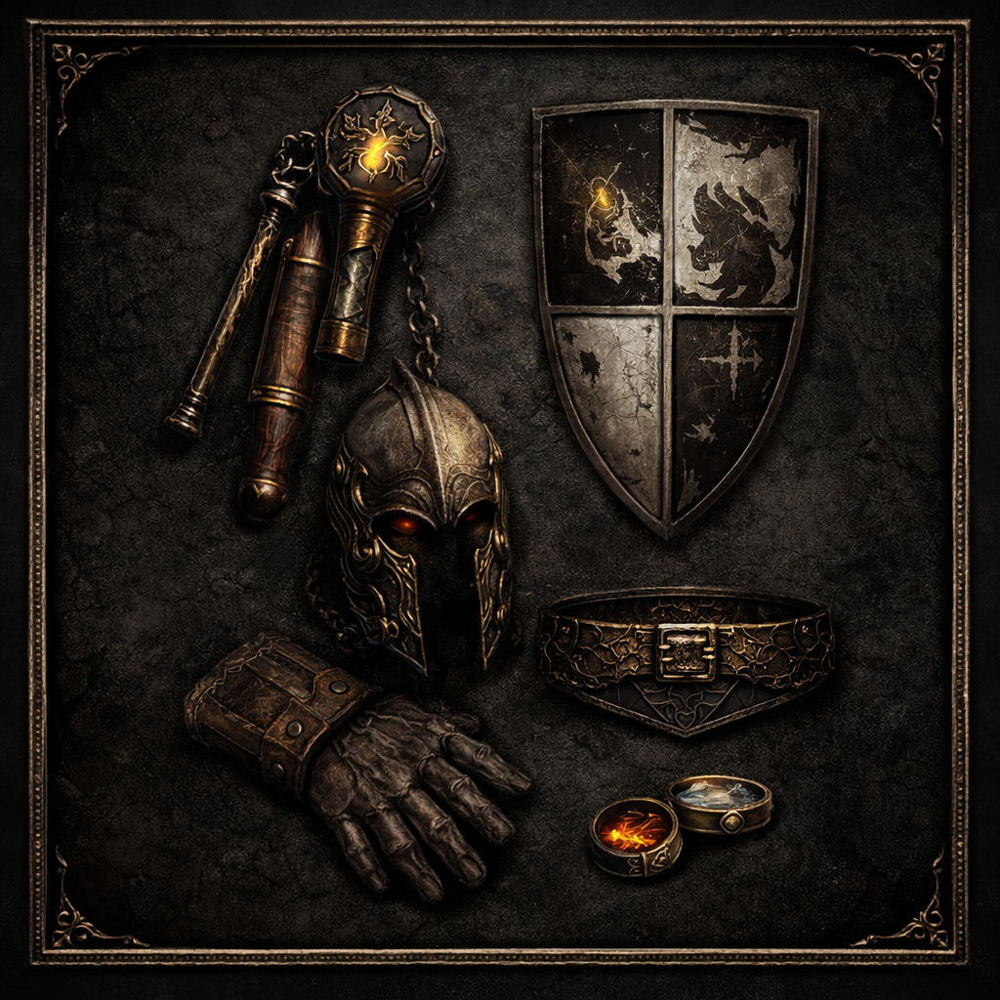

Frozen Orb / Fireball Hybrid
Hybrid Sorceress für stabile Ladder-Starts, variable Terror-Zonen und kontrollierte Immunitäts-Strategie.
Core Skills

Frozen Orb
Main AoE Control & Map Clear

Fireball
Single Target & Immun-Break Support
105% FCR Sweetspot
Optimale Teleport- & Fireball-Animation für Hybrid-Flow.
Endgame Setup

Standard Hybrid Setup
Weapon: Hoto / Tal
Shield: Spirit Monarch
Armor: Tal Rasha
Belt: Arachnid
Gloves: Magefist
Ring: FCR + SoJ
Farming Effizienz

Chaos Sanctuary
Sehr stabil – Hybrid effizient.

Cow Level
Stark für Rune- & Base-Farming.